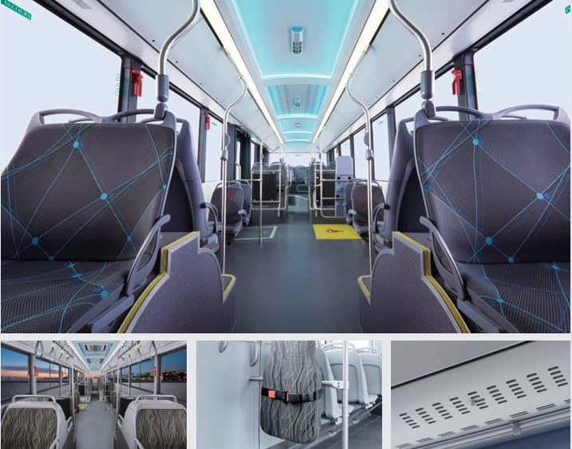
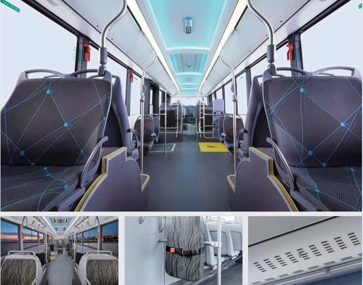

Delta State CNG Mass Transit Initiative
Cleaner, Cheaper, Smarter Transportation for Our Cities
Presentation for the Governor's Representatives & Commissioner of Transport
The Problem & Solution 🏙️
The Problem
- Skyrocketing fuel costs: PMS at ₦1050/L, Diesel at ₦1,700/L (Delta state)
- Increasing air pollution in Delta State urban centers
- Unaffordable public transportation for citizens
- Aging, inefficient transport fleet
- High maintenance costs for operators
The Solution
- Modern CNG-powered mass transit buses
- Fuel cost reduction of up to 60%
- Significantly reduced emissions
- Lower maintenance requirements
- Affordable fares for citizens
"From pollution to solution: The CNG difference for Delta State"
Delta State CNG Mass Transit Initiative
Why CNG? The Advantage ⛽
Economic Benefits
- CNG costs ₦230/kg vs Diesel at ₦1,700/L
- 60% reduction in fuel costs
- 15% lower maintenance costs
- Longer engine life (up to 2x)
- Stable pricing (domestic resource)
Maintenance Benefits
- Fewer oil changes required
- Reduced engine wear and tear
- No fuel theft issues
- Lower overall operating costs
Environmental Benefits
- Up to 25% less CO₂ emissions
- 80% reduction in nitrogen oxides
- 97% less carbon monoxide
- 100% less sulfur dioxide
- 90% less particulate matter
Did You Know?
CNG aligns perfectly with Nigeria's "Decade of Gas" initiative and supports the Federal Government's gas monetization policy.
"Modern, efficient, and environmentally friendly: CNG buses in action"
Delta State CNG Mass Transit Initiative
Revenue Model (Detailed) 💰
Multiple Revenue Streams
- Passenger fares (primary revenue)
- Logistics & parcel delivery services
- Vehicle leasing to operators
- Advertising (internal & external)
- Fuel sales commission
Fuel Sales Commission Model
₦20/kg commission × 40 kg/day per bus × 50 buses = ₦1,200,000/month
Annual commission revenue: ₦14,400,000
"Multiple revenue streams create a sustainable business model with significant returns"
| Revenue Stream | Monthly Revenue (₦) | Annual Revenue (₦) | Notes |
|---|---|---|---|
| Passenger Fares | 37,500,000 | 450,000,000 | Based on 50 buses, 100 passengers/day, ₦250 avg fare |
| Logistics Services | 5,000,000 | 60,000,000 | Parcel delivery, special routes |
| Advertising | 2,500,000 | 30,000,000 | Internal displays, external wraps |
| Fuel Sales Commission | 1,200,000 | 14,400,000 | ₦20/kg × 40kg/day × 50 buses |
Delta State CNG Mass Transit Initiative
Financial Assumptions 📑
Fleet & Operations
- Pilot fleet: 50 city Mass Transit Buses
- Daily operation: 200 km per bus
- CNG consumption: 40 kg/day per bus
- Passenger capacity: 30-40 per bus
- Operational days: 26 days/month
Maintenance
- CNG maintenance: 15% cheaper than diesel
- Extended service intervals
- Reduced engine wear and tear
- Lower lubricant consumption
Fuel Pricing
| Fuel Type | Current Price | Unit |
|---|---|---|
| CNG | ₦230 | per kg |
| Diesel | ₦1,700 | per liter |
| Petrol (PMS) | ₦1050 | per liter |
Monthly Operating Expenses (OpEx)
- CNG Bus: ≈ ₦1,280,000
- Diesel Bus: ≈ ₦3,190,000
- Petrol Bus: ≈ ₦2,460,000
Key Insight: CNG buses operate at approximately 40% of the cost of diesel buses and 52% of petrol buses.
Delta State CNG Mass Transit Initiative
CapEx Breakdown & Financial Notes 📊
Bus Procurement & Shipping Details
| Cost Component | Per Unit ($) | Per Unit (₦) | Total for 50 Buses (₦) |
|---|---|---|---|
| Bus Unit FOB Price | $118,000 | ₦181,012,000 | ₦9,050,600,000 |
| Estimated Freight | $13,685 | ₦20,992,790 | ₦1,049,639,500 |
| CFR (Cost & Freight) | $131,685 | ₦202,004,790 | ₦10,100,239,500 |
| Contingency (15% freight) | $2,050 | ₦3,144,700 | ₦157,235,000 |
| Adjusted CFR (with contingency) | $133,735 | ₦205,149,490 | ₦10,257,474,500 |
⚠️ Important Financial Note
"Due to hazardous cargo restrictions, conventional Ro-Ro and Breakbulk vessels may not always be suitable for transporting CNG buses. A 15% freight contingency buffer has been included to mitigate cost escalation risk."
Exchange Rate Used
All USD to Naira conversions calculated at ₦1534 per dollar.
Delta State CNG Mass Transit Initiative
Practical Cost Savings Example 📉
Monthly Savings Per Bus
| Expense Category | CNG Bus (₦) | Diesel Bus (₦) | Savings (₦) |
|---|---|---|---|
| Fuel Cost | 478,400 | 2,210,000 | 1,731,600 |
| Maintenance | 340,000 | 400,000 | 60,000 |
| Lubricants | 45,000 | 65,000 | 20,000 |
| Other OpEx | 416,600 | 515,000 | 98,400 |
| Total | 1,280,000 | 3,190,000 | 1,910,000 |
Fleet-Wide Impact
Monthly savings with 50 buses: ₦95,500,000
Annual savings with 50 buses: ₦1,146,000,000
That's over ₦1.1 billion in savings per year!
"The numbers speak for themselves: CNG delivers dramatic cost reductions while improving service quality"
Delta State CNG Mass Transit Initiative
PPP Option - Unlocking Private Capital 💼
Government-Funded Infrastructure
- High upfront CapEx (~₦3-4B for initial 3-4 stations)
- Total investment: ~₦10.25B
- Slower ROI but more long-term control
- Higher borrowing requirements
- Breakeven point: ~5 years
Government Responsibilities
- Bus fleet procurement
- Infrastructure development
- Operations management
- Maintenance and servicing
PPP-Funded Infrastructure ✅
- Reduced government CapEx (only buses, training, monitoring)
- Total government investment: ~₦10.2B
- Private partners bear station costs (~₦3.75B)
- Government still earns via fuel sales commission
- Faster ROI: ~3.5 years
- More politically attractive (less borrowing)
Government Focus Areas
- Policy and regulation
- Demand assurance
- Quality monitoring
- Revenue through commissions per kg sold
"Private CNG stations in operation - representing successful PPP implementation"
Delta State CNG Mass Transit Initiative
ROI & 10-Year Projection 📈
Government-Funded Model
- Initial investment: ₦10.2B total
- Bus fleet:
- - FOB Bus Cost: ₦9.05B (50 buses at $118,000 × ₦1534)
- - Freight: ₦1.05B (50 units at $13,685 × ₦1534)
- - Freight Contingency (15%): ₦0.16B
- Infrastructure: ₦3.75B (stations, training, service centers)
- Breakeven point: ~5.2 years
- 10-year ROI: 310%
- IRR: 19.0%
PPP Model (Recommended)
- Government investment: ₦10.2B
- - FOB Bus Cost: ₦9.05B (50 buses at $118,000 × ₦1534)
- - Freight: ₦1.05B (50 units at $13,685 × ₦1534)
- - Freight Contingency (15%): ₦0.16B
- Private investment: ₦2.75B (stations)
- Breakeven point: ~3.7 years
- 10-year ROI: 410%
- IRR: 24.2%
- Revenue sharing: Government earns ₦20/kg commission
Key Insight: The PPP model becomes cash-flow positive in Year 2 and fully recovers investment by Year 3.5, while requiring 38% less government capital.
Financial Comparison: Government vs PPP Model
| Year | Fleet Size | Government Model | PPP Model | ||
|---|---|---|---|---|---|
| Annual Profit (₦B) | Cumulative ROI | Annual Profit (₦B) | Cumulative ROI | ||
| Year 1 | 50 | -0.32 | -4.1% | -0.12 | -2.4% |
| Year 3 | 100 | -0.12 | -1.5% | 0.33 | 6.6% |
| Year 5 | 150 | 0.58 | 7.5% | 0.82 | 16.4% |
| Year 10 | 300 | 1.18 | 310.0% | 1.58 | 410.0% |
Delta State CNG Mass Transit Initiative
Case Studies & Testimonials 🌍
Nigerian States with CNG Initiatives
- Inaugurated 100 out of 200 acquired CNG mass transit buses
- Comprehensive statewide implementation
- Received four 50-seater hybrid CNG buses from Presidential CNG Initiative
- Improving public transportation in the capital
- Kogi: Launched PCNG project with 10 CNG-powered buses
- Kwara: Received 20 CNG-powered vehicles and unveiled CNG buses and tricycles
- Ogun: Rolled out 17 CNG buses as part of state initiative
- Received 20 CNG buses from Federal Government
- Commenced first phase of vehicle conversions
- Implementing CNG in state transport system
Testimonials
- John Obi, Fleet Manager, Lagos Transport Company
- Emmanuel Adegoke, Bus Driver, Abuja
Delta State CNG Mass Transit Initiative
Implementation Plan 🗺️
PPP Implementation Approach
- Deploy 50 CNG buses in Asaba & Warri
- Partner with private investors for 4 mobile refueling units
- Train drivers and maintenance staff
- Establish monitoring systems
- Gather operational data and feedback
- Expand to 6 major hubs across Delta State
- Increase fleet to 150 buses
- Private partners establish 6 permanent refueling stations
- Implement digital payment systems
- Optimize routes based on Phase 1 data
- Expand to all major cities and towns
- Scale to 300+ buses
- Comprehensive PPP-funded CNG infrastructure network
- Integration with other transport modes
- Full digital operations platform
Key Implementation Milestones
- Month 1: Feasibility study completion
- Month 3: First 25 buses delivered
- Month 4: First mobile refueling unit operational
- Month 6: Full pilot fleet operational
- Month 12: First permanent CNG station
- Month 24: 50% of target routes covered
- Month 36: Complete statewide coverage
Delta State CNG Mass Transit Initiative
Fleet & Infrastructure 🔧
Recommended Fleet
- KING LONG XMQ6127G
- 35-40 passenger capacity
- Advanced CNG engine technology
- Low floor for easy access
- Proven reliability in similar markets
- Modern amenities and passenger comfort
Maintenance Support
- Local spare parts inventory
- Specialized CNG technician training
- Mobile maintenance units
- Preventive maintenance scheduling
CNG Infrastructure
- Phase 1: Mobile Solutions
- 4 mobile refueling units
- Capacity: 25 buses each
- Deployment at strategic bus depots
- Rapid deployment capability
- Phase 2: Fixed Stations
- 6 permanent CNG stations
- Strategic locations in Asaba, Warri, and other major cities
- Public access capability
- High-volume capacity
- Training & Service Facilities
- 3 technical training centers (₦80M each)
- 4 service centers across Delta State (₦90M each)
- Specialized CNG maintenance equipment
- Spare parts inventory management
 

"The king-long-XMQ6127G offers modern design, passenger comfort, and operational efficiency"
"Modern interiors and efficient refueling systems ensure passenger comfort and operational efficiency"
Safety Features
All CNG buses are equipped with advanced safety features including leak detection systems, automatic shutdown valves, and reinforced CNG tanks that exceed international safety standards. CNG is actually safer than liquid fuels in many accident scenarios.
Delta State CNG Mass Transit Initiative
Environmental Benefits 🌱
Emissions Reduction
Annual Impact (50-Bus Fleet)
- CO₂ reduction: 1,825 tonnes
- NOx reduction: 36.5 tonnes
- PM reduction: 2.7 tonnes
- Equivalent to planting 91,250 trees
Public Health Benefits
- Reduced respiratory illnesses
- Decreased healthcare costs
- Improved quality of life
- Reduced noise pollution
- Cleaner urban environment
Climate Action
- Supports Nigeria's NDC commitments
- Aligns with global climate goals
- Positions Delta State as a green leader
- Creates foundation for future green initiatives
"Cleaner air, healthier communities: The environmental dividend of CNG transit"
Delta State CNG Mass Transit Initiative
Conclusion & Call to Action 🤝
Quadruple Win Solution with PPP Approach
- Economic Win
- ₦1.1B+ annual savings
- New jobs in green transport
- Reduced transport costs for citizens
- Sustainable business model
- Environmental Win
- Dramatic emissions reduction
- Cleaner air in urban centers
- Reduced carbon footprint
- Healthier communities
- Governance Win
- Aligns with FG gas monetization policy
- Demonstrates innovative leadership
- Improves public service delivery
- Creates positive public perception
- Financial Win
- 38% less government capital required
- Faster ROI through PPP model
- Shared risk with private partners
- Sustainable revenue through fuel commissions
Next Steps
- Approve detailed feasibility study (2 weeks)
- Establish PPP framework with Origin Innovation and private investors (30 days)
- Secure initial funding allocation for government portion (45 days)
- Finalize private partner agreements for infrastructure (60 days)
- Launch 90-day pilot program (Q3 2025)
The Vision
"To transform Delta State's public transportation system into the cleanest, most efficient, and most affordable network in Nigeria, setting the standard for sustainable urban mobility across the country."
"The future of transportation in Delta State: clean, affordable, and sustainable"
Delta State CNG Mass Transit Initiative | Contact: info@origininnovation.ng | Tel: +234-808-903-0000